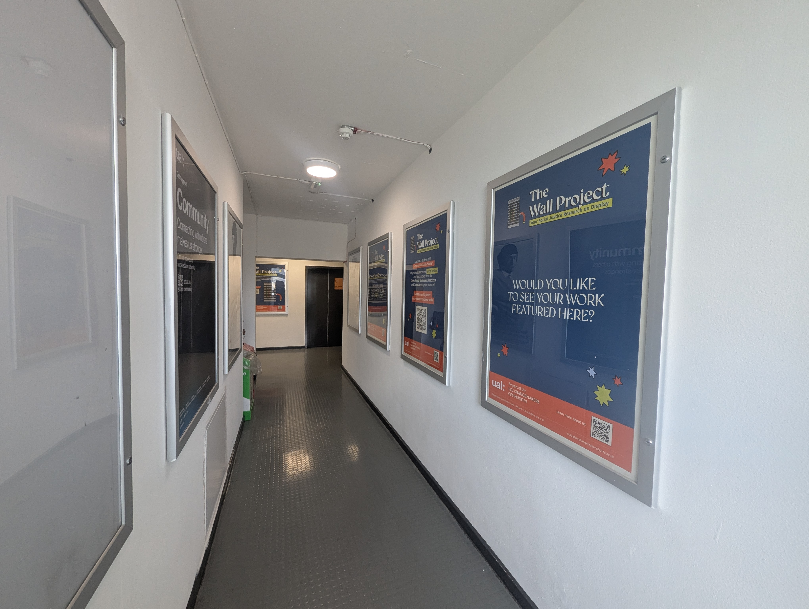

The Wall Project offers Y2 Communications and Media students of the London College of Communication (LCC) - UAL the opportunity to exhibit their self-directed research on social justice themes on the walls of the University.


This project explores how LCC can transform institutional spaces into living, participatory environments that invite belonging and reflect the diverse truths of their communities.
By moving beyond static, one-way communication, it investigates how co-created and dialogic design can give shape to more inclusive, conversational cultures.
Central to this inquiry is the use of curatorial practices as intentional, political tools for highlighting social justice issues, elevating marginalised voices, and sparking collective reflection.
“Chiara brings a collaborative spirit to every project, generating innovative ideas and adapting to any challenge.”

Click the Tower to know more about the project.